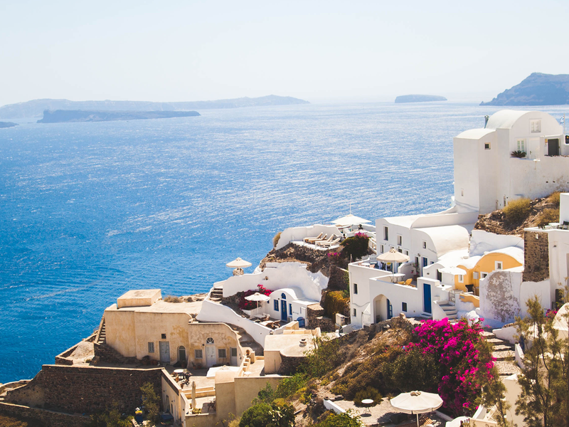
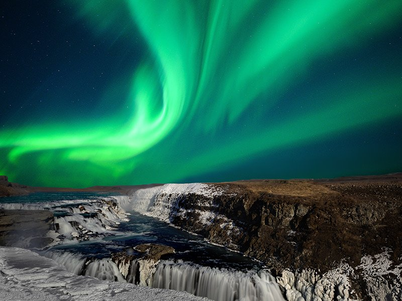
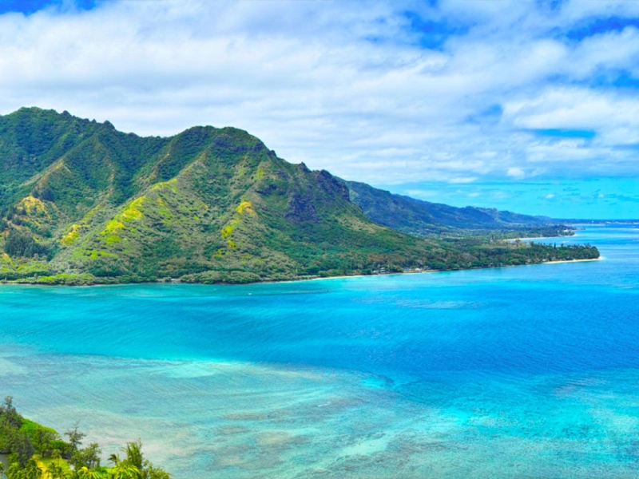
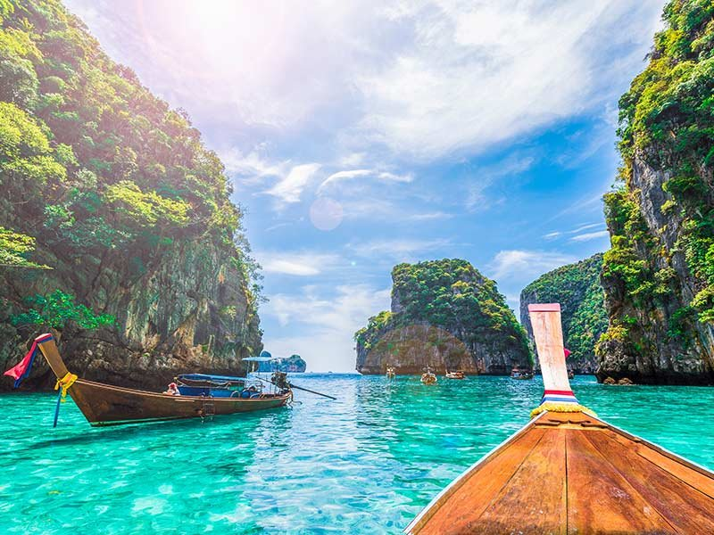
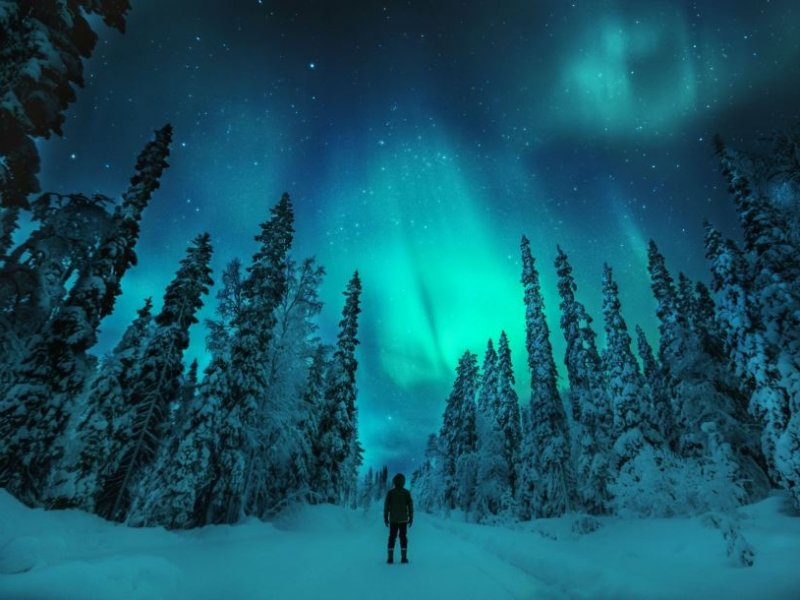
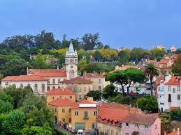
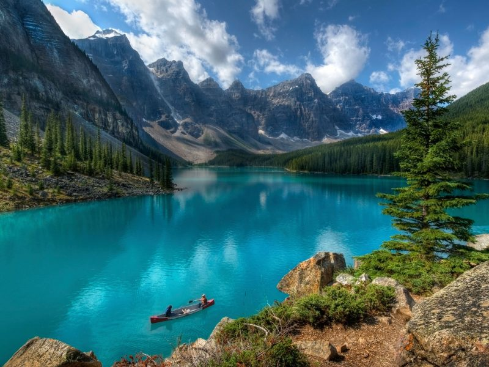
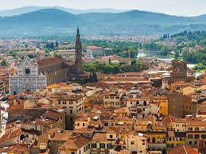

Grécia
A Grécia é um país do sudeste da Europa com milhares de ilhas espalhadas pelos mares Egeu e Jônico. Bastante influente na antiguidade, a nação é considerada o berço da civilização ocidental. Atenas, sua capital, conserva monumentos como a Acrópole, do século V a.C., onde fica o templo Partenon. A Grécia também é conhecida por suas praias, como Santorini, com suas areias escuras, e os festivos complexos hoteleiros de Míconos.
Veja aqui mais sobre a Grécia
Islândia
A Islândia, país insular nórdico, tem uma paisagem exuberante, com vulcões, gêiseres, fontes termais e campos de lava. Suas imensas geleiras estão protegidas nos parques nacionais Vatnajökull e Snæfellsjökull. A maioria da população vive na capital, Reykjavik, abastecida por energia geotérmica e sede dos museus Nacional e Saga, que traçam a história viking da Islândia
Veja aqui mais sobre a Islandia
Havaí
O Havaí, um estado dos EUA, é um arquipélago vulcânico isolado no Pacífico Central. Suas ilhas são conhecidas pelas paisagens acidentadas compostas de penhascos, cachoeiras, florestas tropicais e praias com areia dourada, vermelha, preta e até mesmo verde. Das 6 ilhas principais, Oahu tem a maior cidade e capital do Havaí, Honolulu, que abriga a praia de Waikiki, em formato de lua crescente, e os memoriais da Segunda Guerra Mundial, em Pearl Harbor
Mais coisas sobre o Havaí
Tailândia
A Tailândia é um país do Sudeste Asiático conhecido pelas praias tropicais, pelos palácios reais suntuosos, pelas ruínas antigas e pelos templos ornamentados com figuras de Buda. Bangcoc, a capital, tem uma paisagem urbana ultramoderna que contrasta com comunidades tranquilas à beira de canais e com os emblemáticos templos de Wat Arun e Wat Pho, além do Templo do Buda de Esmeralda (Wat Phra Kaew). Entre os balneários próximos, estão o movimentado Pattaya e o elegante Hua Hin.
Veja mais sobre a Tailândia
Finlândia
A Finlândia é uma nação do norte da Europa que faz fronteira com a Suécia, a Noruega e a Rússia. Sua capital, Helsinque, ocupa uma península e ilhas vizinhas do Mar Báltico. A cidade abriga a fortaleza marítima de Suomenlinna, do século XVIII, o moderno Design District e vários museus. A aurora boreal pode ser vista da província da Lapônia, situada no Ártico, que conta com uma vasta área selvagem, além de parques nacionais e estações de esqui.
Veja mais sobre a Finlândia aqui
Portugal
Portugal é um país no sul da Europa, localizado na Península Ibérica, que faz fronteira com a Espanha. Sua localização às margens do Oceano Atlântico influenciou muitos aspectos da cultura do país: o bacalhau salgado e as sardinhas assadas são pratos típicos nacionais, as praias do Algarve são destinos muito procurados e boa parte da arquitetura do país data dos séculos XVI a XIX, quando Portugal era um poderoso império marítimo.
Veja mais sobre portugal
Canadá
O Canadá é um país norte-americano que se estende desde os EUA, no sul, até o Círculo Polar Ártico, no norte. Entre suas grandes cidades estão a gigantesca Toronto; Vancouver, centro cinematográfico da costa oeste; Montreal e Québec City, que falam francês; e a capital, Ottawa. As vastas regiões de natureza selvagem do Canadá compreendem o Parque Nacional de Banff, repleto de lagos nas Montanhas Rochosas. Abriga também as Cataratas do Niágara, um famoso conjunto de enormes cachoeiras.
Veja mais sobre o Canadá
Itália
A Itália, país europeu com uma longa costa mediterrânea, deixou uma marca poderosa na culinária e na cultura ocidentais. A capital, Roma, é sede do Vaticano e abriga obras de arte monumentais e ruínas antigas. Outra cidade importante é Florença, com obras-primas do Renascimento, como o "Davi", de Michelangelo, e o Domo de Brunelleschi. Destacam-se também Veneza, a cidade dos canais, e Milão, capital da moda italiana.
Veja mais sobre a Itália
Jamaica

A Jamaica é um país insular no Caribe com uma topografia exuberante de montanhas, florestas tropicais e praias com recifes. Muitos dos seus resorts all-inclusive estão localizados em Montego Bay, com sua arquitetura colonial britânica, e Negril, conhecida pelos locais de mergulho e snorkeling. A Jamaica é famosa como berço da música reggae, e sua capital, Kingston, abriga um museu dedicado ao cantor Bob Marley.
Veja mais sobre a Jamaica aqui
Africa do Sul

A África do Sul é um país situado na extremidade sul do continente africano e marcado por vários ecossistemas diferentes. O Parque Nacional Kruger, um destino para safári no interior do país, é repleto de animais de grande porte. A província de Cabo Ocidental tem praias, vinícolas exuberantes perto de Stellenbosch e Paarl, colinas escarpadas no Cabo da Boa Esperança, florestas e lagoas ao longo da Tuinroete (rota dos jardins) e a Cidade do Cabo, que fica ao pé da montanha da Mesa, de topo achatado.
Veja mais sobre a Africa do Sul aqui